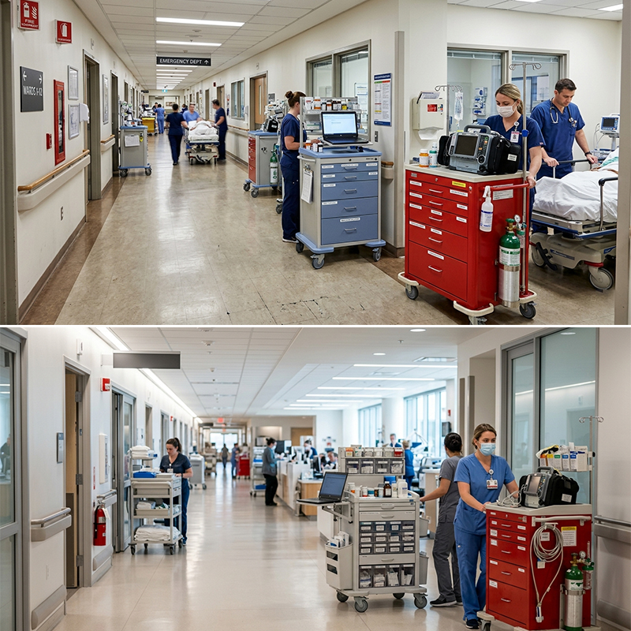
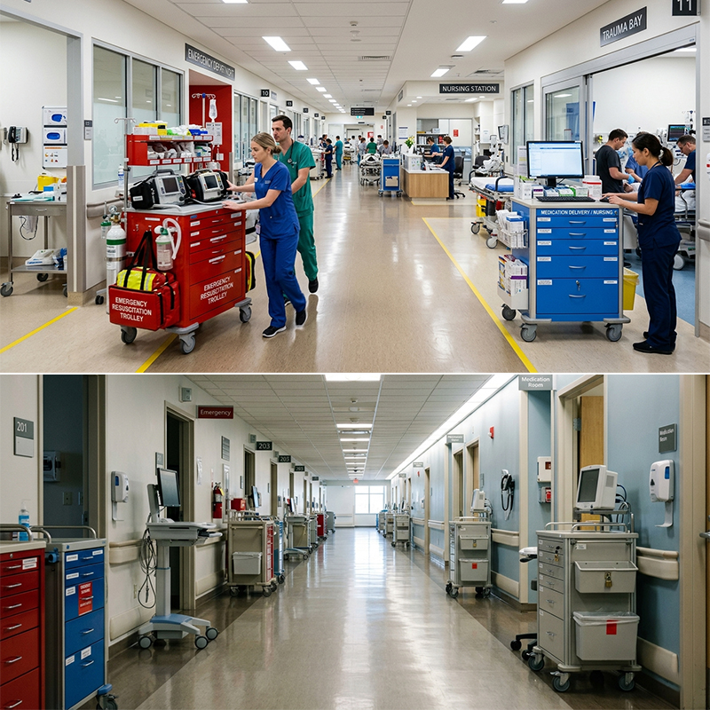
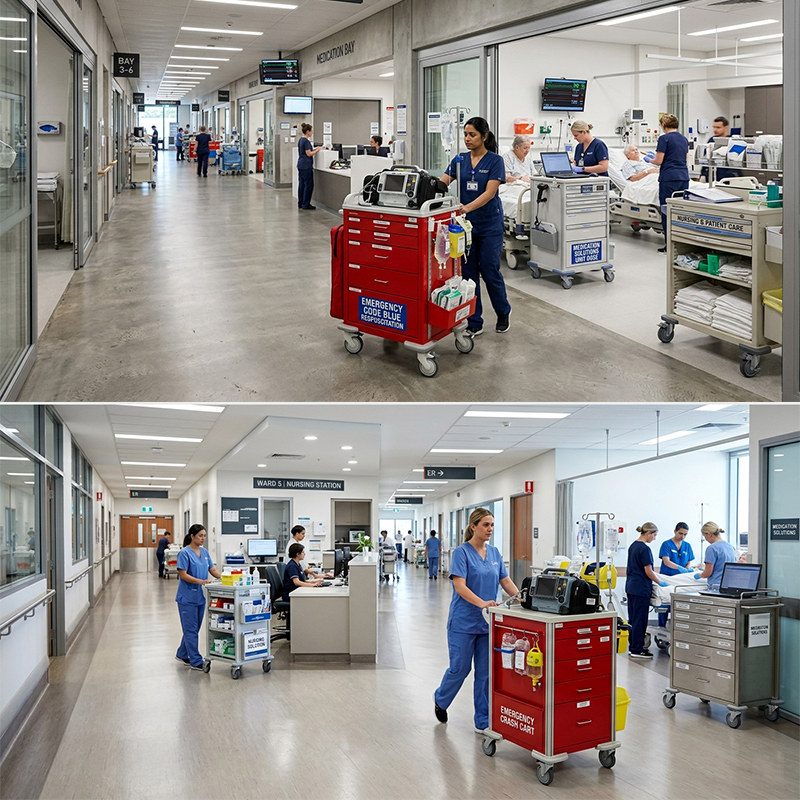

Este carro auxiliar con ruedas es la solución móvil para tener todo el material de cuidados al alcance de la mano en cualquier punto de la casa. Los cajones amplios guardan material de curas y medicación, la superficie superior sirve de mesa de trabajo improvisada, y las ruedas con freno permiten estacionar el carro junto a la cama del paciente o guardarlo cuando no se necesita.
Las cuatro ruedas giratorias permiten desplazar el carro entre habitaciones sin esfuerzo, ideal para cuidadores que atienden al paciente en diferentes zonas de la casa. Dos ruedas tienen freno de pie para inmovilizar el carro durante su uso.
Los tres cajones con cierre suave ofrecen espacio suficiente para organizar material de curas, medicación, termómetro, tensiómetro y demás utensilios de cuidado. Los divisores interiores se ajustan para separar los elementos según tus necesidades.
La superficie superior de fácil limpieza sirve de mesa de trabajo para preparar medicación, cambiar un apósito o colocar la bandeja de comida del paciente. Los bordes elevados evitan que los objetos se deslicen al mover el carro.
El diseño compacto (45 × 40 × 85 cm) pasa por puertas estándar y cabe en cualquier rincón cuando no se utiliza. Las asas laterales facilitan el agarre para empujar o tirar del carro en pasillos estrechos.
El acabado en blanco o gris claro con tiradores de acero inoxidable se integra visualmente en cualquier habitación de la casa sin parecer un mueble hospitalario. Las superficies se limpian con un paño húmedo y desinfectante doméstico.
| Modelo | Cajones | Medidas | Uso |
|---|---|---|---|
| Compacto | 2 cajones | 40 × 35 × 80 cm | Material básico |
| Estándar | 3 cajones | 45 × 40 × 85 cm | Cuidados completos |
| Grande | 4 cajones | 50 × 45 × 90 cm | Enfermería en casa |
| Con cerradura | 3 cajones | 45 × 40 × 85 cm | Medicación controlada |
| Material | Acero pintado epoxi + superficie ABS |
| Medidas | 45 × 40 × 85 cm (estándar) |
| Cajones | 3 cajones con cierre suave y divisores |
| Ruedas | 4 ruedas giratorias, 2 con freno de pie |
| Superficie | ABS con bordes elevados, fácil limpieza |
| Acabado | Blanco o gris claro (personalizable) |
| Certificaciones | CE |
| Garantía | 3 años estructura, 1 año ruedas |
Cuidados en la cama: carro móvil con material de curas y medicación que se acerca a la cama del paciente durante las tareas de higiene y cura, y se guarda después.
Cuidador a domicilio: carro auxiliar para profesionales que atienden a pacientes en casa, con espacio para material profesional y registro de visitas.
Cocina-comedor: carro auxiliar para trasladar comidas y bebidas al paciente en la cama, con superficie estable y ruedas silenciosas que no rayan el suelo.
No, las ruedas están fabricadas en material TPR no marcante, adecuado para suelos de madera, cerámica, vinilo y mármol. Se deslizan suavemente sin dejar marcas ni rayones.
Sí, la superficie superior soporta hasta 20 kg de carga. Esto permite colocar una bandeja con comida, material de curas o un pequeño equipo de medición como tensiómetro o pulsioxímetro.
El acero pintado epoxi resiste la humedad del baño, pero recomendamos evitar el contacto directo con agua. Si necesitas un carro para uso exclusivo en baño, ofrecemos una versión en acero inoxidable con mayor resistencia a la corrosión.
Este producto también está disponible en versión profesional para hospitales: Ver versión hospitalaria →
Reciba información detallada de todos nuestros productos de mobiliario médico.
📋 Solicitar catálogo